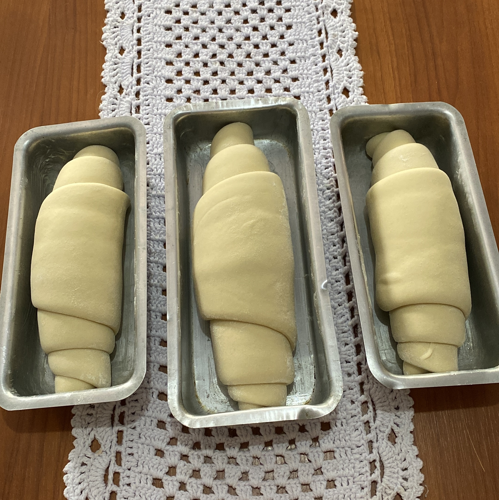
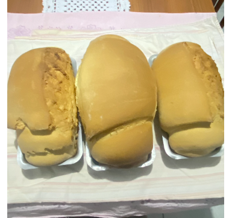

A dotted border.
Quem somos: Bem-vindo ao mundo da Panifição Artesanal com Fermentação Natural Pão do Céu, onde a tradição e a inovação se unem para criar pães verdadeiramente excepcionais. Somos uma empresa apaixonada pela arte da fermentação natural e dedicada a oferecer produtos de panificação de alta qualidade, feitos com ingredientes naturais e técnicas artesanais.
Na busca incessante pela perfeição do pão, mergulhamos profundamente nas raízes da panificação, resgatando métodos ancestrais de fermentação que têm sido esquecidos com o tempo. Nossa jornada começa com a seleção cuidadosa dos melhores grãos e ingredientes, valorizando a qualidade e a procedência de cada componente que compõe nossos produtos.
Aqui, a fermentação é mais do que um processo, é uma filosofia que nos guia. Nossos padeiros são verdadeiros artesãos, dedicados a dominar a ciência e a arte da fermentação natural para criar pães que são uma celebração do sabor, da textura e do aroma. Cada pão que produzimos é uma obra-prima única, resultado de horas de cuidado e atenção.
Acreditamos que a fermentação natural não é apenas uma técnica, mas um compromisso com a autenticidade, a saúde e a sustentabilidade. Nossos produtos não contêm conservantes, aditivos químicos ou ingredientes artificiais, proporcionando uma experiência de sabor genuína e nutritiva.
Na nossa empresa, não apenas alimentamos o corpo, mas também alimentamos a alma com a tradição, a paixão e a dedicação que colocamos em cada pão que sai de nossos fornos. Junte-se a nós nessa jornada de descoberta e apreciação da verdadeira panificação com fermentação natural. Seja bem-vindo à nossa família de pães artesanais que são feitos com amor e inspiração.
